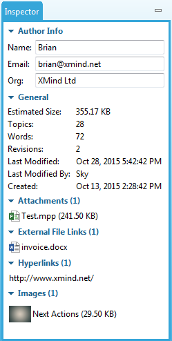

Inspector
Insepctor is a view to display some information and resources of current XMind file.
Including:
- Author Info
- Name
- Organization
- General Info
- Estimated size
- Topic quantity
- Word count
- Revisions
- Last modified time
- last modified by whom
- Create time
- Attachments
- External file links
- Hyperlinks
- Images
You can click Window - Inspector from Menu to open inspector view.
